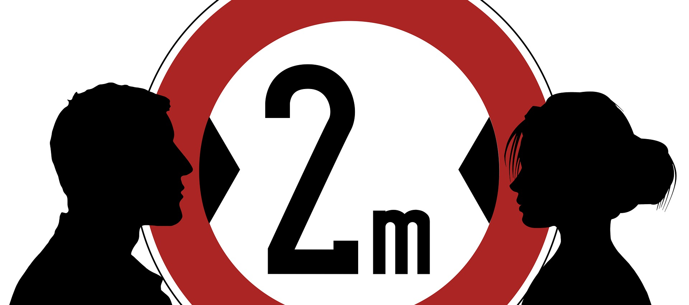
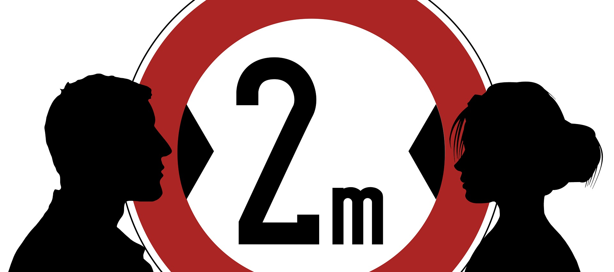

Pour empêcher la propagation de la COVID-19, suivez ces recommandations :
.Lavez-vous fréquemment les mains. Utilisez du savon et de l'eau, ou une solution hydroalcoolique.
.Tenez-vous à distance de toute personne qui tousse ou éternue.
.Portez un masque lorsque la distanciation physique n'est pas possible.
.Évitez de vous toucher les yeux, le nez ou la bouche.
.Évitez de vous toucher les yeux, le nez ou la bouche.
.En cas de toux ou d'éternuement, couvrez-vous le nez et la bouche avec le pli du coude ou avec un mouchoir.
.Restez chez vous si vous ne vous sentez pas bien.
.Consultez un professionnel de santé si vous avez de la fièvre, que vous toussez et que vous avez des difficultés à respirer.
.Prévenez le professionnel de santé par téléphone au préalable. Il pourra ainsi vous orienter rapidement vers l'établissement de santé
adéquat. Cela vous protège, et empêche la propagation des virus et d'autres infections.
Masques
Les masques peuvent contribuer à éviter que les personnes qui les portent transmettent le virus à d'autres personnes. Le seul port du
masque ne protège pas contre la COVID-19. Il doit être associé à des mesures de distanciation physique et d'hygiène des mains. Suivez les
conseils des autorités sanitaires locales.
Moments essentiels pour se laver les mains
Vous pouvez vous aider et aider vos proches à rester en bonne santé en vous lavant souvent les mains, surtout pendant ces moments critiques où vous risquez de contracter et de propager des germes :
.Avant, pendant et après la préparation des aliments
.Avant et après la préparation des aliments
.Avant et après avoir prodigué des soins à une personne à la maison prise de vomissements ou de diarrhées.
.Avant et après le traitement d’une blessure ou d’une plaie
.Après avoir été aux toilettes
.Après avoir changé une couche ou lavé un enfant qui vient d’aller aux toilettes
.Après s’être mouché, avoir toussé ou avoir éternué.
.Après avoir touché un animal, des aliments pour animaux ou des déchets d’animaux
.Après avoir manipulé de la nourriture ou des friandises pour des animaux de compagnie
.Après avoir touché les ordures
Cette liste des moments clés auxquels se laver les mains a été élaborée à partir de données tirées d’un certain nombre d’études. Il peut
aussi être important de se laver les mains à d’autres moments que ceux mentionnés.
 

Qu’est-ce que la distanciation sociale ?
La distanciation sociale, également appelée distanciation physique, est une mesure de contrôle utilisée pour arrêter ou
ralentir la propagation d’une maladie contagieuse. Elle consiste essentiellement à limiter le nombre de personnes avec
lesquelles vous êtes en contact étroit.
Les gouvernements du monde entier conseillent actuellement à tous de pratiquer la distanciation sociale afin de réduire la pression sur les services de santé et stopper la propagation du COVID-19.
Pourquoi la distanciation sociale est-elle importante en ce moment ?
Le COVID-19 peut se propager par le biais de gouttelettes respiratoires, de petites quantités de liquide qui peuvent s’échapper lorsqu’une
personne atteinte de la maladie tousse ou éternue.
Si vous vous tenez trop près d’eux, vous pouvez inhaler ces gouttelettes, voire le virus COVID-19.
En limitant vos contacts avec d’autres personnes et en maintenant une distance sociale, vous réduisez les risques d’attraper le virus et de le transmettre.
Comment pratiquer la distanciation sociale ?
L’Organisation mondiale de la santé recommande de se tenir à au moins un mètre de toute personne qui a de la fièvre, une toux ou tout autre symptôme du virus, ce qui implique d’éviter les poignées de mains, les étreintes ou les embrassades.
L'Utilisation: Comment et quand les appliquer?
Pendant l'épidémie de Covid : compte tenu des modes de transmission du SARS-CoV-2 (directe par gouttelettes ou indirecte par les mains), l'hygiène des mains doit être réalisée fréquemment dans tous les milieux communautaires (domicile, écoles, lieux de travail, etc.) rappelle le Haut Conseil de la Santé Publique dans un Avis du 24 avril soit via le lavage des mains à l'eau et au savon ou via une FHA (friction au gel hydro-alcoolique) avec un produit contenant au moins 60% d'alcool. Il faut le faire :
.après toute manipulation d'un masque (tout type de masque).
.avant de préparer les repas, de les servir et de manger,
.avant de sortir de chez soi,
.après s'être mouché, avoir toussé ou éternué,
.après avoir rendu visite à une personne malade,
.après chaque sortie à l'extérieur,
.après avoir pris les transports en commun (ou partagés),
.après être allé aux toilettes,
.après avoir touché aux parties communes d'un immeuble.
Il est recommandé de se laver les mains à l'eau et au savon pendant 30 secondes puis de les sécher avec une serviette propre ou à l'air libre.

© Created by Dame Gueye Djamil